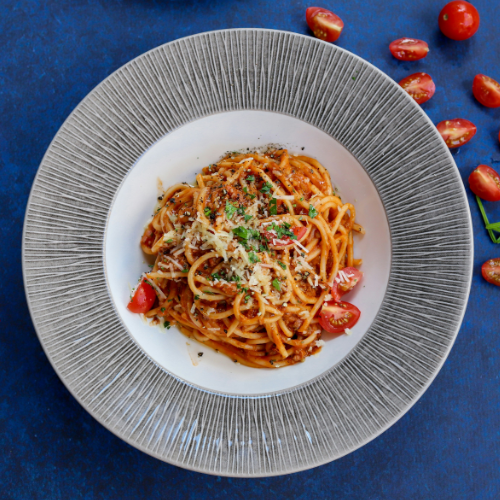
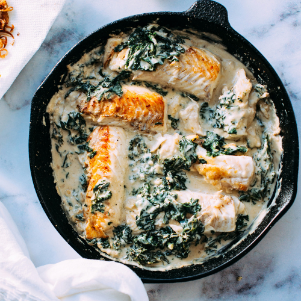
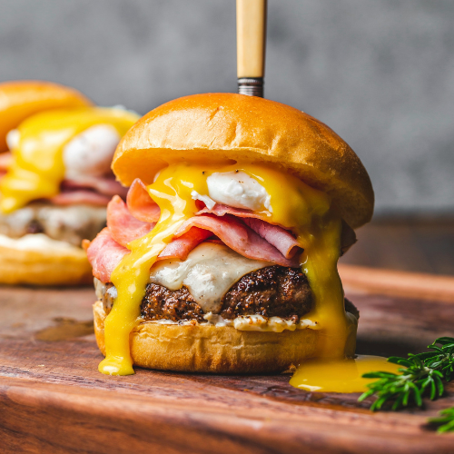
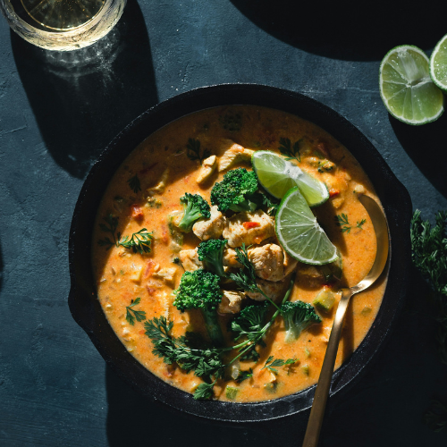
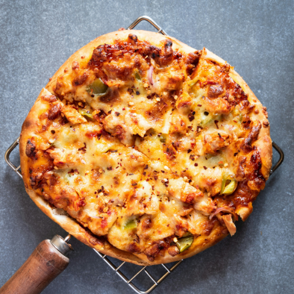
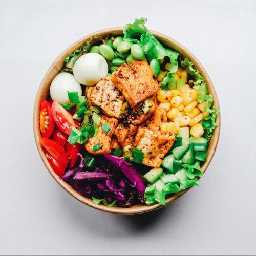

DELICIOUS RECIPES
Spaghetti Carbonara
Nothing can be as potentially divisive or provocative with Italians than people altering a classic carbonara recipe. So here is the definitive recipe, using pigs' cheeks, egg yolks, black pepper and parmesan cheese, and served with spaghetti. A classic dish from the Roman tradition, known as one of Rome's 'four famous pastas', the carbonara is a simple dish that requires a very specific technique. Once you get it right though, it is easily perfected.
View RecipeCreamy Tuscan Salmon
Tuscany with our Creamy Tuscan Salmon, a dish that embodies the essence of Italian cuisine at its finest. With its succulent salmon, creamy Tuscan sauce, and aromatic herbs, this dish is sure to transport you to the rolling hills and sun-dappled vineyards of Italy with every luxurious bite. Join us and experience the magic of Tuscan-inspired cuisine in every mouthwatering morsel.
View RecipeClassic Cheeseburger
Delight in the simple yet sublime pleasure of our Classic Cheeseburger, where every bite is a celebration of flavor, texture, and pure culinary joy. Whether enjoyed as a quick and satisfying lunch or a hearty dinner option, this iconic dish is sure to leave you feeling fully satisfied and longing for more.
View RecipeChicken Alfredo
With its creamy texture, savory chicken, and vibrant vegetables, this dish is sure to transport you to the heart of Italy with every forkful. Whether enjoyed as a cozy meal for one or a decadent feast shared with loved ones, our Chicken Alfredo promises to deliver an unforgettable dining experience that will leave you craving more.
View RecipeHomemade Supreme Pizza
With its perfect balance of flavors, textures, and aromas, this pizza is sure to tantalize your taste buds and satisfy your cravings for comfort food indulgence. Whether enjoyed as a casual weeknight meal or a festive gathering with friends and family, our Homemade Supreme Pizza is guaranteed to be a hit every time. Join us and savor the taste of true culinary craftsmanship with every bite.
View RecipeGreek Lemon Garlic Chicken Salad
Embrace a culinary journey of wholesome flavors and nourishing ingredients with our signature Healthy Chicken Meal. Crafted with care by our talented chefs, this dish is a celebration of vibrant ingredients and balanced nutrition, promising both satisfaction and well-being in every bite.
View Recipe